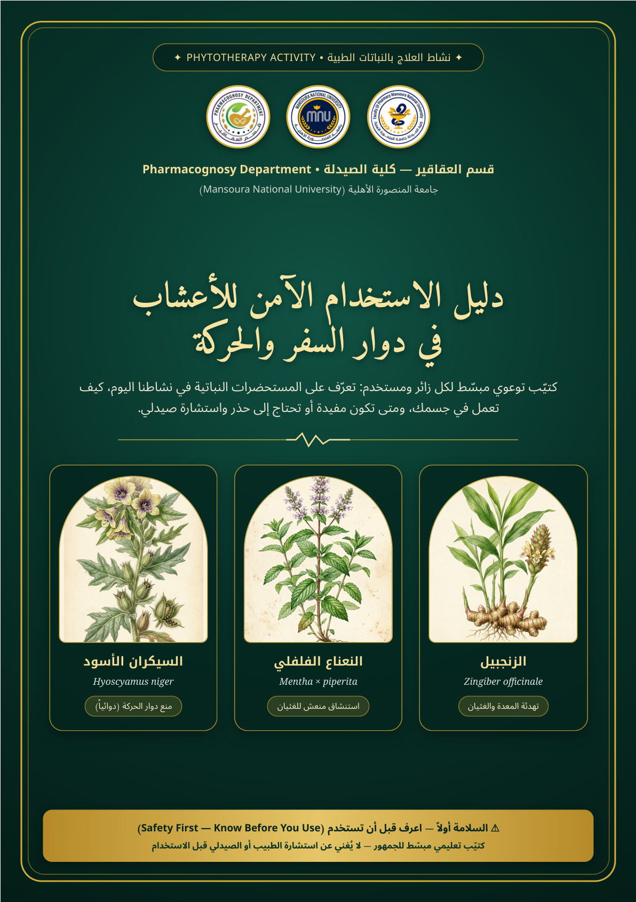
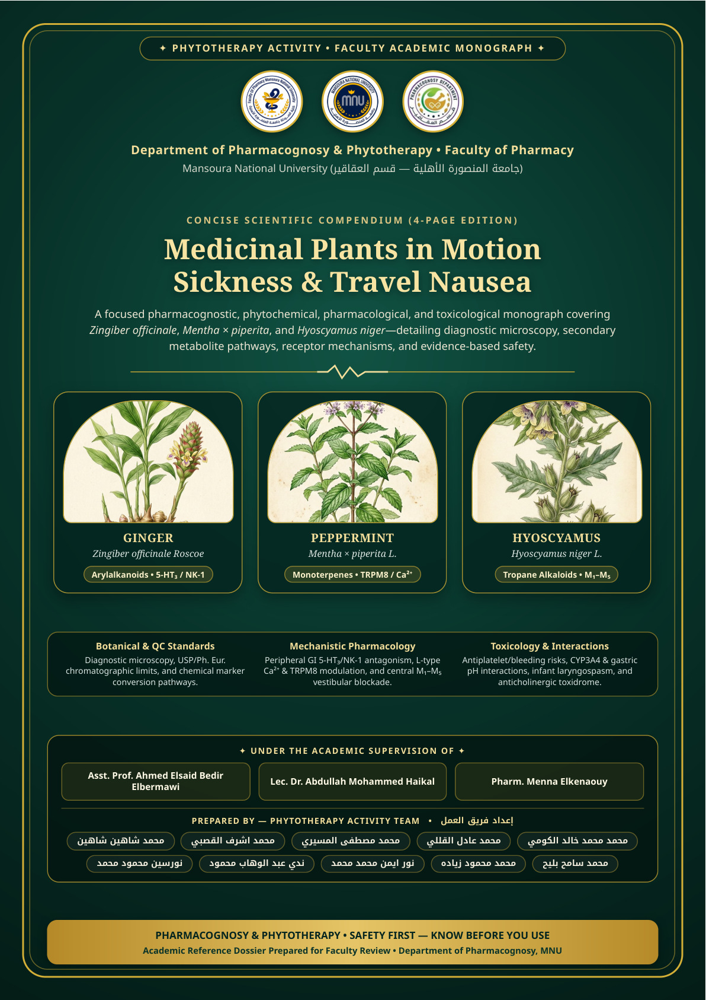

دليل إرشاديللمرضى والزائرين
دليل الاستخدام الآمن للأعشاب
دليل عربي متكامل يعرّف بدوار السفر والحركة، والمستحضرات النباتية، وأهم احتياطات الاستخدام.
اقرأ دليل المريض ←إصدارات علمية وتوعوية
إصداران متكاملان عن أمان النباتات الطبية في السفر والحركة؛ دليل واضح للمريض والزائر، ومرجع أكاديمي للطبيب والصيدلي.
من كلية الصيدلة · جامعة المنصورة الأهلية
الصفحات محفوظة محليًا · دون اعتماد على خدمة خارجية
المكتبة العلمية
اقرأ الصفحات الأصلية كاملة، مع نص قابل للبحث والنسخ داخل كل صفحة.

دليل عربي متكامل يعرّف بدوار السفر والحركة، والمستحضرات النباتية، وأهم احتياطات الاستخدام.
اقرأ دليل المريض ←
مرجع متخصص في العقاقير والكيمياء النباتية والدوائيات وسلامة الزنجبيل والنعناع والسيكران.
اقرأ المرجع الأكاديمي ←عن الإصدارات
تجمع هذه الإصدارات التوعية العامة والمراجعة الأكاديمية حول النباتات الطبية المرتبطة بدوار السفر والحركة. المحتوى للتثقيف، ولا يحل محل النشرات المعتمدة أو استشارة المختص.